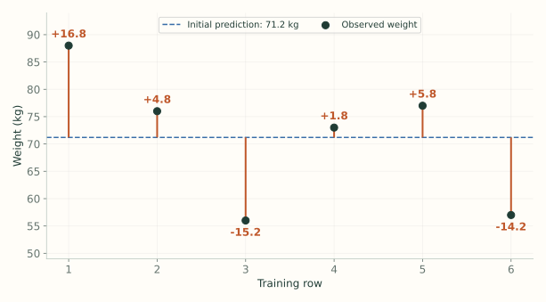
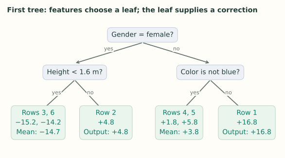

1. Regression: Main Ideas
Notes on StatQuest with Josh Starmer · Gradient Boost Part 1 · 15:52 video. Explanations and redrawn figures follow the lecture’s worked example.
A boosted regression model starts with one simple prediction. Each new tree learns how to correct what the model still gets wrong. The final prediction adds those corrections together.
1. Start with the average weight
Video 5:50 ↗The lecture predicts weight from height, favorite color, and gender. Before using any feature, predict the average training weight for everybody: about 71.2 kg.
| Row | Height (m) | Color | Gender | Weight (kg) | Residual |
|---|---|---|---|---|---|
| 1 | 1.6 | Blue | Male | 88 | +16.8 |
| 2 | 1.6 | Green | Female | 76 | +4.8 |
| 3 | 1.5 | Blue | Female | 56 | −15.2 |
| 4 | 1.8 | Red | Male | 73 | +1.8 |
| 5 | 1.5 | Green | Male | 77 | +5.8 |
| 6 | 1.4 | Blue | Female | 57 | −14.2 |

2. Why predict the residual?
Video 7:17 ↗Row 1 weighs 88 kg, but the model predicts 71.2. The missing amount is $88-71.2=16.8$. Train the new tree to predict that missing amount from the features.
The tree’s output is added to the prediction we already have.
Current prediction + predicted residual = updated prediction.
That is why an output of 16.8 is useful: it fills the gap. Predicting 88 again and adding it would give 159.2. The new tree must learn the remaining error.
We know actual weights during training, so we can calculate those errors. For a new person we cannot calculate the true error; the tree estimates a correction from their height, color, and gender.
3. Fit a small tree to those residuals
Video 7:35 ↗The inputs stay the same. The training target changes from weight to residual. Feature rules group rows with similar residuals into leaves. If several rows share a leaf, the tree uses their mean residual as its output.

Rows 3 and 6 share a leaf, so its output is $(-15.2-14.2)/2=-14.7$. Their individual errors differ, but both need roughly the same downward correction. A region is simply the group of inputs that follows the rules into one leaf.
4. Add only part of the correction
Video 9:11 ↗The lecture scales each tree by a learning rate of 0.1. For row 1:
It is closer to 88, but it has not tried to fix the whole error at once. Small updates let many trees build the fit gradually and can reduce overfitting. A perfect match to a training row alone tells us little about a new person.
The learning rate scales the tree’s contribution; it does not change the actual target, 88.
5. Recalculate the errors and build the next tree
Video 10:28 ↗For row 1 the remaining residual is now $88-72.88=15.12$. Recalculate residuals for all rows using the whole updated model, fit the next tree to those values, and add its scaled output.
If the second tree predicts 15.12 for this row, its next prediction is:
The video displays these as 72.9, 15.1, and 74.4 after rounding. A shared leaf may only approximate a row’s residual, and later trees may use different feature rules.
6. Predict for a new person
Video 13:50 ↗Start at 71.2. Send the new person’s features through each trained tree, take the one leaf output reached in each, multiply it by 0.1, and add everything:
Here $h_m(x)$ is tree $m$’s correction and $\nu$ is the learning rate. No actual weight or residual is needed to route the new person through a tree.